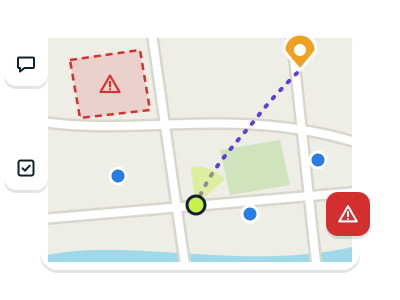

What Tesel is
One map for the team: where everyone is, what has been marked on the ground, the messages, the tasks and the reports. If someone presses SOS, everyone knows at once, with their position.
-
With internet
It works like any messaging app.
-
Without internet
It keeps working with pocket radios that pass messages on to each other.
Tesel does not replace the emergency number.
It helps the team coordinate. If you can call emergency services, always call.

Getting started in three steps
Each person, once, on wifi and on a quiet day: an emergency is not the time to learn a tool.
-
1. Open the app and type your name
No email, phone number or password. If you arrive with an invitation, this step already joins you to the group.
-
2. Put it on the home screen
Android, Chrome: ⋮ → Add to Home screen
iPhone, Safari: Share → Add to Home ScreenIt opens like an app and works offline.
-
3. Download the map of your area
More → Offline maps → Download
Move the map to your area first. It takes space: better on wifi.
With the team: agree on a meeting point, who coordinates and what to do without coverage. Run a drill: a message, a test SOS you then cancel and, with radios, the same with phones in airplane mode and Bluetooth on. Repeat it now and then, with charged batteries.
Details
- Under Options, when downloading, you can name it, choose the detail (“Streets”, “Town”, “Region”) and, in Spain, Portugal, Andorra and southern France, also get the topographic and the satellite map.
- If the download is cut, Resume carries on where it stopped.
- Even if you download nothing, Tesel keeps an overview of the map and the last places you looked at, so it is never blank offline.

The group
Whoever creates the group coordinates it: they invite the others, mark where the work is and organise the teams.
-
Create the group
To start → Create a group
The “To start” card shows on the map while you are in no group.
-
Invite
Group → Invite
Share the link or let them scan the QR. The invitation is the key: whoever has it gets in.
-
Mark the operation area
Add → Area → draw it → Operation area
Every member will see “Download” to have that map offline.
-
Form teams
Group → Organise → New team
A name, a colour and who is in it. On the map each person wears their team’s colour.
Details
- To join a group without the link: To start → Join a group and scan the QR.
- Whoever coordinates is told without looking: a short notice says when someone joins, when a report arrives (what is happening and the casualties) and when someone starts or finishes a task.
- The members list says who does not share their position; an antenna marks whoever has a LoRa radio or reaches you by radio.
- A task or a sweep strip can be for a whole team: it counts as a task of each of its members and tells all of them.

Tell the team how you are
Me holds what is yours: your name, your state, whether you share your position and what you carry. The team sees it on your card.
-
Your name
Me → 1pencil
The group sees it changed at once.
-
Your state
Me → 2Active · Resting · Off duty
Whoever is resting or off duty shows on the map as an empty circle.
-
Your position
Me → 3Share my position
While you do not share it, a card on the map reminds you, with a button to do it.
-
A teammate’s card
tap them on the map or in the list → Guide me
At the top, how far they are; below, the same as in their Me.
Details
- Me also shows, if you have a LoRa radio, your profile (Civil Protection, Firefighters, Police…), your battery, your coordinates and how precise your GPS is, what you carry (in four groups: from the first-aid kit and water to the 4×4, the boat or the satellite phone) and your tasks.
- With your position off, the team sees where you were, unless you turn on Hide where I was too.
- The battery cannot be read on an iPhone.

Talking: chat and reports
The chat to talk; the report to tell what is happening in one message that stays pinned.
-
Write
Chat
Short, clear messages: by radio they cost less and arrive sooner. With the chat closed, a new one shows in a notice with “View”.
-
Dictate
Chat → 2Dictate
Speak, check the text and send it.
-
Send a report
Add → Report → what is happening
It goes with your position in one message, by radio too, and stays pinned under 1Reports.
Details
- In a report you can tell, if you wish, the casualties by triage colour, the hazards, how the access is and what is needed.
- In the chat a report takes one line, which opens when tapped. The “Reports” tab keeps them all, with the casualties added up, and they show on the map.
- Dictation uses the phone’s speech recognition (Google or Apple) and on most phones needs internet.

Marking the ground
Everything new starts in Add, and the whole team sees it at once.
-
A point
Add → Marker → tap the place
A meeting point, a hazard, an injured person.
-
A route
Add → Route → point by point → Finish
Tap it later and press Follow route: it guides you along it.
-
An area
Add → Area → draw it → choose its style
With “Danger area”, the phone of whoever walks into it vibrates and warns them.
-
Correct or delete
tap it → → Edit
“Delete” is in the same menu.
Details
- If someone reads you coordinates, press Coordinates on the card and type them instead of tapping the map.
- A route has up to 25 points. File reads one from a GPX, KML or GeoJSON file: the app thins it to 25 points and says how far at most it strays from the original. An area can come from a KML or GeoJSON file too.
- Follow route takes you to its start and then point by point, with what is left, and warns you if you stray. Task on this route hands it to someone; at the end, Task done closes it.
- Each phone watches the danger areas with its own GPS, offline too; while there is one, the GPS stays on for this, sharing nothing. Areas also say how large they are.

Tasks and sweeps
Share out the work and let everyone see who does what. Use them for everything, for what matters or for nothing: whatever suits your team.
-
Give a task
Tasks → New task
Only the text is needed: type it or pick a common one. If you wish, who it is for and where.
-
From the map
hold a point → Task here
Or tap a marker, an area or a route: the task goes wherever that object goes.
-
Do it
Start → Done
If you mark it done by mistake, Undo in the notice brings it back.
-
A sweep
tap the search area → Plan a sweep → Create sweep
Each team gets its strip as a task; Follow strip guides it lane by lane.
Details
- The common ones: search the area, check a home, treat an injured person… The place is picked with Pick on the map in the task itself.
- The list groups them by who has them, yours first. Each person moves on their own and those for anyone; a number on the button says how many you have.
- For a sweep, the area is drawn with the style “Search area, assigned”. Choose the terrain (open, 25 m between people; scrub, 10 m; dense forest, 5 m) or the spacing, how many teams and who leads each; Turn lanes changes their direction. The lanes show before you create it.
- The area shows how each strip is going, and Follow strip says how much each team has swept. When all are done, the area turns to “Search area, cleared” by itself.

SOS and “Are you OK?”
An SOS reaches the whole group with your position, makes phones vibrate and ring, and is not lost: it is repeated until someone receives it.
-
Call for help
1SOS → what is happening → Send SOS
When someone sees it they press “Acknowledge”, and you will know. If it is no longer needed: Cancel SOS.
-
Answer an SOS
2Acknowledge → Guide me
The card says how far and in which direction they are; “Guide me” takes you there.
-
“Are you OK?”
Group → Organise → “Are you OK?” check
Whoever has been active and still for 30 minutes is asked by their phone. With no answer in 2 minutes, an SOS goes out with their last position.
Details
- If the phone does not know where you are yet, the SOS goes anyway and the position follows as soon as it has one.
- Sending it closes whatever you had open, so you see your SOS. Until it has reached someone, the notice says so; by radio it is repeated until someone receives it.
- An SOS received closes the chat if you had it open, so you see it.
- The coordinator turns on “Are you OK?”. A tap on the screen answers it. It never asks whoever is resting or off duty, and for now it only works with Tesel open on screen.

Finding your way
All of this works on your phone: with or without a group, with or without a connection.
-
Where you are
target
Shows you and keeps the map centred on you. The compass above puts north back at the top.
-
Go to a place
tap it → Guide me
An arrow, the distance and a dotted line to the target. If it is a teammate, the target moves with them.
-
Coordinates
hold a point · More → Go to a coordinate
Tap them to copy them. If someone reads you some, type them as given and the app places them.
-
Map and layers
layers → streets · topographic · satellite
Below, each layer is a button: tap it to hide or show it.
-
Measure
More → Measure distances
Tap point by point: the distance and, from three points, the area.
Details
- If you move the map with your finger, it stops following you: press the target again. The GPS is only used while something needs it: sharing your position, the target or a guide. While guiding, the screen stays on.
- The coordinate format (degrees, DMS, UTM or MGRS) is chosen in More → Settings. On a computer, the right button stands for holding.
- The topographic and satellite maps cover Spain, Portugal, Andorra and southern France. From afar the satellite is a single Sentinel‑2 image, the same for everyone; close up, each country’s official aerial photos.
- Layers: members, markers, tasks, reports, trails (the line of each person’s last hours), services, weather warnings, relief, cadastre, radar and grid. Your position and SOS calls always show.
- Relief shades hills and valleys and, beside the distance to a place, says how much the straight way climbs and descends and its steepest stretch. Cadastre (online and close up) shows the parcels with their number and polygon.
- Radar draws distance rings around you and a line to the five nearest teammates; while it is on, the GPS stays on. MGRS grid, the one firefighters, the UME and ATAK use: lines every 100 km, 10 km, 1 km or 100 m as the zoom allows.
- Services: health centres and hospitals, pharmacies, fire stations, police, helipads, town halls and fuel stations, from OpenStreetMap; offline, in areas downloaded with “Streets” detail. In some villages the map may be incomplete.
- Weather warnings: the official yellow, orange and red ones (AEMET, IPMA, through MeteoAlarm) tint their area. If you are inside one, a card says what it warns of and until when; they are kept to be seen without coverage.

Without internet
You do not have to change anything. Tesel uses whatever link there is, and what you write offline goes out as soon as there is one.
-
See how you are connected
top right: WiFi · 4G/5G · LoRa
Green dot: connected. Orange: connecting. Red: offline. Each time you send something, a notice says whether it arrived, went by radio or is waiting.
-
With a radio
connection → Connect radio
Your messages, your position and your SOS go by radio and the team’s reach you. It can stay in your backpack.
-
With a radio and coverage
Your phone acts as a bridge without you doing anything: what comes by radio goes up to the server, and the other way round.
-
With neither
The downloaded map keeps working and you can write. If someone in the team has a radio, stay close to them.
iPhone? Safari cannot connect a radio over Bluetooth. Until the native app arrives, use the Bluefy browser (a stopgap we are still testing). Over the internet, Tesel works the same.
With internet
With a radio
Through a bridge
Details
- Tesel uses MeshCore radios: small devices that connect to the phone over Bluetooth and send messages to each other with LoRa, a signal that goes very far on very little power. In Europe they use the free 868 MHz band: no licence needed.
- We will publish the recommended models here when the field tests end. Each radio is set up once, from a computer with Chrome, with MeshCore’s official web flasher and the “Companion Bluetooth” firmware.
- Range: from a kilometre in a city to tens of kilometres between high places. Each radio repeats the others’ messages: the more there are, the further they reach. A radio on a high balcony or at a window helps the whole team.
- A radio sends very little data and the law limits how long it may transmit, so it is slower. Tesel puts the urgent first: SOS calls, then messages, and positions last.
- What you wrote without a radio goes out when you connect it, and if the link drops, Tesel gets it back by itself. Pressing the indicator shows a card per link; where the phone does not say whether it uses wifi or data (on an iPhone, for instance), it shows “WiFi/5G”.
- In Me and on each member’s card, the “LoRa radio” line says who has one connected: whoever has one stays in touch even if the network falls; whoever does not is cut off. The card also says when something of theirs last reached you by radio or by the server.
- If someone nearby uses the MeshCore app, their messages appear in the chat’s “MeshCore” tab. To answer, use the MeshCore app.

Afterwards: the diary
Everything that happened in the group, in order: who joined, the messages and SOS calls, who acknowledged them, and every marker or area added, changed or deleted.
-
Read it
More → Operation diary
-
For the report
Operation diary → Download
A text file, with the coordinates in your format.
-
An encrypted copy
Encrypted log → Save a copy
All the group’s events, which only its members can read. Load a copy on another phone of the group gives it whatever it lacks.
Details
- The copy works as a backup, or to hand the coordinator, on a USB stick, what a phone lived through by radio alone.

Privacy and security
Everything in the group is encrypted with a key only its members have: the server cannot read the messages.
-
The invitation is the key
Whoever has it gets in. If it went to the wrong people, the coordinator can create a new group and invite again.
-
Lock your phone
The group’s keys are kept on it. Leaving a group deletes it from the phone.
-
Your position is yours
It is only shared when you choose.
Details
- Within the group everyone is trusted: the app does not check who writes each message, so a member could pass for another.
- By radio the encryption is simpler: it keeps out curious eyes, not someone with means and will. Do not send by radio what you would not say aloud in a public place.
Settings
More → Settings
- Coordinate format
- Degrees, DMS, UTM or MGRS. Remembered.
- Screen always on
- The screen does not turn off while Tesel is open. It uses more battery.
- Full screen
- In Chrome and similar browsers, on Android and on a computer, Tesel fills the screen from the first tap. The back gesture or Esc leaves it until next time; here, for good.
- Alarm sound
- Turns the SOS beep off or on. The vibration stays.
- Notifications
- An SOS notice arrives also with Tesel in the background, if the browser allows it. Tapping it opens Tesel.
- Language
- Spanish or English. At first, the browser’s.
If something does not work
The top says “No connection”
Your phone has no internet. What you write is kept and will go out later. If you have a radio, connect it.
The map is blank
Without internet only the areas downloaded beforehand show. Download your area in “Offline maps” next time you have wifi.
I cannot see a teammate on the map
They are most likely not sharing their position: the group’s members list says so. Ask them to share it in Me.
I cannot find the radio when connecting
Check it is on, charged and set up with the “Companion Bluetooth” firmware, and that you use Chrome or Edge (on an iPhone, Bluefy). If it was connected to the MeshCore app, disconnect it there first.
The radio says it has no free channels
Open the MeshCore app, delete a channel you do not use and connect again from Tesel. Tesel never deletes channels by itself.